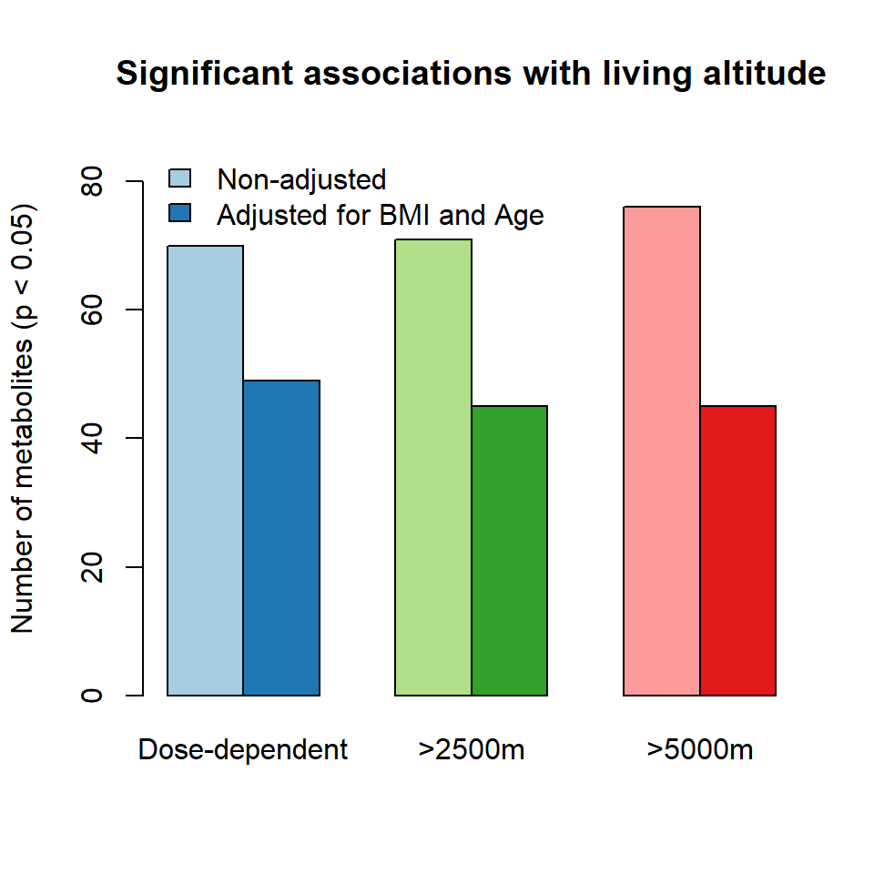
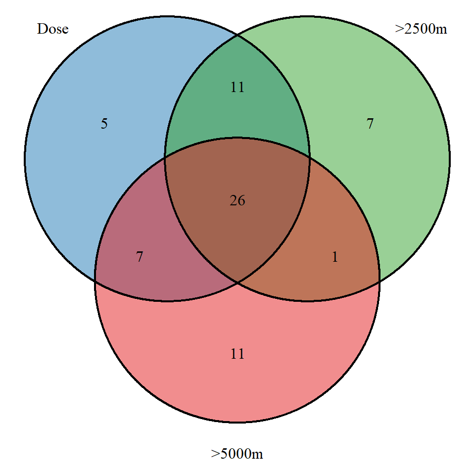
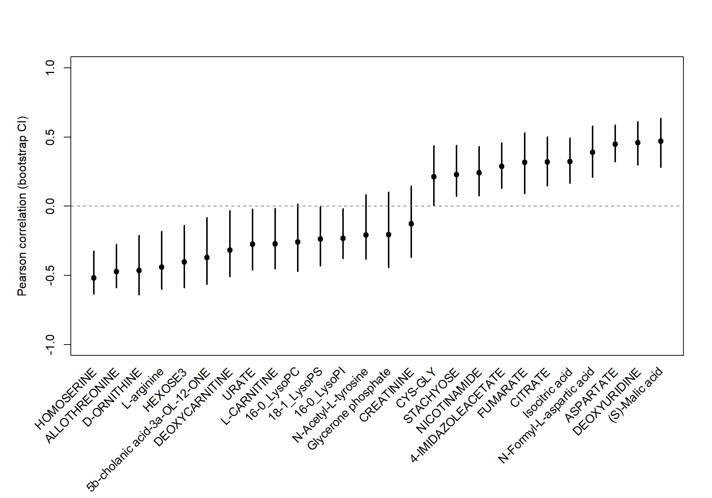

Chapter 7 Metabolite-focused statistical approaches
This chapter investigates associations between metabolomic features and living altitude using both unadjusted and adjusted statistical models.
We apply:
Correlation analysis (Pearson)
Group comparisons (Wilcoxon tests)
Adjustment for confounders (Age, BMI)
Multiple visualization strategies (barplot, Venn diagram, bootstrap confidence intervals)
7.2 Defining the working data: \(X\) et \(Y\)
In this analysis, two sets of variables are defined. The matrix \(X\) corresponds to metabolomic features grouped by biological pathways, while the matrix \(Y\) contains clinical variables measured in the same individuals.
Both matrices are aligned using a common set of sample identifiers to ensure that each row corresponds to the same individual across datasets. Missing values in \(Y\) are handled by removing variables with excessive missingness.
Clinical variables are further organized into predefined groups reflecting physiological functions. Additional covariates such as sampling location and clinical status are encoded and used for visualization purposes.
## X - METABOLOME
X = data$METABO$METABOLOMICS_PLASMA
ID_in_X = rownames(X)
## Y - CLINICAL VARIABLES
Y = apply(data$PHYSIO$`Clinical data`[ID_in_X,], 2, as.numeric)
Y[which(is.infinite(Y))] <- NA
w = which((colSums(is.na(Y))<40))
Y = Y[,w]
y = factor(data$PHYSIO$`Clinical data`[ID_in_X,]$`City of testing`, levels = c("Lima" ,"Puno", "La Rinconada")) ## Altitude of residence
col.Y = factor(y, levels(y), paletteer::paletteer_d("tvthemes::Alexandrite")[4:6]) # Colors for plots
## CO-variates
pch.CMS = as.numeric(as.character(factor(data$PHYSIO$`Clinical data`[ID_in_X,]$`CMS groups`,
c("No CMS", "Mild CMS", "Mod-Sev CMS"), c(16, 15, 15)) ))
age = data$PHYSIO$`Clinical data`[ID_in_X,]$Age
BMI = data$PHYSIO$`Clinical data`[ID_in_X,]$BMI7.3 Summary of significant associations (Barplot)
We first quantify the number of metabolites significantly associated with living altitude under different thresholds:
Dose-dependent association
High altitude > 2500 m
High altitude > 5000 m
Both unadjusted and covariate-adjusted models are compared.
# Non_adjusted
p_dose.metabo = p_2500.metabo = p_5000.metabo = NULL
p_dose.metabo.adj = p_2500.metabo.adj = p_5000.metabo.adj = NULL
for(i in 1:ncol(X)){
p_dose.metabo = c(p_dose.metabo, cor.test(as.numeric(X[,i]), as.numeric(y))$p.value)
p_2500.metabo = c(p_2500.metabo, wilcox.test(as.numeric(X[,i])~as.numeric(y)<2)$p.value)
p_5000.metabo = c(p_5000.metabo, wilcox.test(as.numeric(X[,i])~as.numeric(y)<=2)$p.value)
p_dose.metabo.adj = c(p_dose.metabo.adj, cor.test(lm(as.numeric(X[,i]) ~ age+BMI)$residuals, as.numeric(y))$p.value)
p_2500.metabo.adj = c(p_2500.metabo.adj, wilcox.test(lm(as.numeric(X[,i]) ~ age+BMI)$residuals ~ as.numeric(y)<2)$p.value)
p_5000.metabo.adj = c(p_5000.metabo.adj, wilcox.test(lm(as.numeric(X[,i]) ~ age+BMI)$residuals ~ as.numeric(y)<=2)$p.value)
}
# Count significant p-values
res <- c(
sum(p_dose.metabo < 0.05),
sum(p_2500.metabo < 0.05),
sum(p_5000.metabo < 0.05),
sum(p_dose.metabo.adj < 0.05),
sum(p_2500.metabo.adj < 0.05),
sum(p_5000.metabo.adj < 0.05)
)
mat <- matrix(res, nrow = 2, byrow = TRUE)
rownames(mat) <- c("Non-adjusted", "Adjusted")
colnames(mat) <- c("Dose-dependent", ">2500m", ">5000m")
cols = RColorBrewer::brewer.pal(6, 'Paired')
bp <- barplot(mat,
ylim = c(0, max(mat) + 10),
beside = TRUE,
col = cols,
ylab = "Number of metabolites (p < 0.05)",
main = "Significant associations with living altitude")
legend("topleft",
fill = cols,
legend = c("Non-adjusted", "Adjusted for BMI and Age"),
bty = "n")
7.4 Overlap of significant metabolites (Venn diagram)
We next evaluate the overlap of significant metabolites across altitude contrasts using adjusted models.
library(VennDiagram)
met_dose <- colnames(X)[p_dose.metabo.adj < 0.05]
met_2500 <- colnames(X)[p_2500.metabo.adj < 0.05]
met_5000 <- colnames(X)[p_5000.metabo.adj < 0.05]
venn.diagram(
x = list(
Dose = met_dose,
`>2500m` = met_2500,
`>5000m` = met_5000
),
filename = NULL,
fill = cols[c(2,4,6)],
alpha = 0.5,
cex = 1,
cat.cex = 1,
cat.dist = c(0.05, 0.05, 0.05),
margin = 0.02
)
7.5 Stability of associations (Bootstrap confidence intervals)
To assess robustness, we estimate bootstrap confidence intervals for Pearson correlation coefficients between metabolites and living altitude for metabolites significant in all conditions.
As you can see on the Venn Diagram, it seems that most metabolite variations are dose-dependent with the living altitude.
all_three <- Reduce(intersect, list(met_dose, met_2500, met_5000))
res <- NULL
for (met in all_three) {
res_diff <- NULL
for (j in 1:999) {
bootstrap <- sample(1:nrow(X), replace = TRUE)
ct <- cor.test(
as.numeric(X[bootstrap, met]),
as.numeric(Y[bootstrap])
)
res_diff <- c(res_diff, ct$estimate)
}
res <- cbind(res, res_diff)
}
low <- apply(res, 2, quantile, 0.05)
high <- apply(res, 2, quantile, 0.975)
median_x <- apply(res, 2, median)
res_cor <- data.frame(r = median_x, low = low, high = high)
res_cor <- res_cor[order(res_cor$r), ]
par(mar = c(10, 5, 4, 2))
plot(seq_along(res_cor$r),
res_cor$r,
ylim = c(-1, 1),
pch = 19,
xaxt = "n",
xlab = "",
ylab = "Pearson correlation (bootstrap CI)")
segments(seq_along(res_cor$r),
res_cor$low,
seq_along(res_cor$r),
res_cor$high,
lwd = 2)
abline(h = 0, lty = 2, col = "grey50")
text(seq_along(res_cor$r),
par("usr")[3] - 0.1,
labels = all_three[order(median_x)],
srt = 45,
adj = 1,
xpd = TRUE)
7.6 Interpretation
We observed an increase in tricarboxylic acid (TCA) cycle intermediates, including aspartate, citrate, and Fumarate, alongside a decrease in deoxycarnitine and L-carnitine, which are key metabolites involved in the transport of fatty acids into mitochondria for \(\beta\)-oxidation.
To further investigate altitude-driven metabolic adaptations, we examined the relationship between L-carnitine and nicotinamide. Nicotinamide, also known as vitamin \(B_3\), plays a central role in cellular metabolism, acting both as a modulator of inflammatory processes and as a precursor of the redox cofactors \(NAD^+/NADH\). Under conditions of reduced oxygen availability, these electron carriers are essential for maintaining redox balance by supporting anaerobic glycolysis. In this process, pyruvate—the end product of glycolysis—is reduced to lactate, thereby regenerating \(NAD^+\) and sustaining glycolytic flux.
Here, we report a significant negative correlation between L-carnitine and nicotinamide (\(p\) < 0.05). Consistent with this observation, nicotinamide levels increase with living altitude (\(p\) < 0.05).
Taken together, these findings support a coordinated metabolic shift toward anaerobic energy production in response to high-altitude hypoxia.
layout(matrix(c(1:6), nrow = 2, byrow = T))
par(mar = c(2, 5, 2, 2))
boxplot(X$ASPARTATE~y, col = paletteer::paletteer_d("tvthemes::Alexandrite")[4:6], axes = F,
ylab = "Intensity (normalised)", main = "Aspartate", xlab = "")
text(x = c(2,3), y = max(X$ASPARTATE)*1.05, c("a", "a,b"), cex = 1, xpd=NA)
axis(2)
boxplot(X$CITRATE~y, col = paletteer::paletteer_d("tvthemes::Alexandrite")[4:6], axes = F,
ylab = "Intensity (normalised)", main = "Citrate", xlab = "")
text(x = c(2,3), y = max(X$CITRATE)*1.05, c("a", "a,b"), cex = 1, xpd=NA)
axis(2)
boxplot(X$FUMARATE~y, col = paletteer::paletteer_d("tvthemes::Alexandrite")[4:6], axes = F,
ylab = "Intensity (normalised)", main = "Fumarate", xlab = "")
text(x = c(3), y = max(X$FUMARATE)*1.05, c("a,b"), cex = 1, xpd=NA)
axis(2)
boxplot(X$DEOXYCARNITINE~y, col = paletteer::paletteer_d("tvthemes::Alexandrite")[4:6], axes = F,
ylab = "Intensity (normalised)", main = "Deoxycarnitine", xlab = "")
text(x = c(2,3), y = max(X$DEOXYCARNITINE)*1.05, c("a", "a,b"), cex = 1, xpd=NA)
axis(2)
boxplot(X$`L-CARNITINE`~y, col = paletteer::paletteer_d("tvthemes::Alexandrite")[4:6], axes = F,
ylab = "Intensity (normalised)", main = "L-carnitine", xlab = "")
text(x = c(3), y = max(X$`L-CARNITINE`)*1.05, c("a,b"), cex = 1, xpd=NA)
axis(2)
boxplot(X$NICOTINAMIDE~y, col = paletteer::paletteer_d("tvthemes::Alexandrite")[4:6], axes = F,
ylab = "Intensity (normalised)", main = "Nicotinamide", xlab = "")
text(x = c(2,3), y = max(X$NICOTINAMIDE)*1.05, c("a", "a"), cex = 1, xpd=NA)
axis(2)